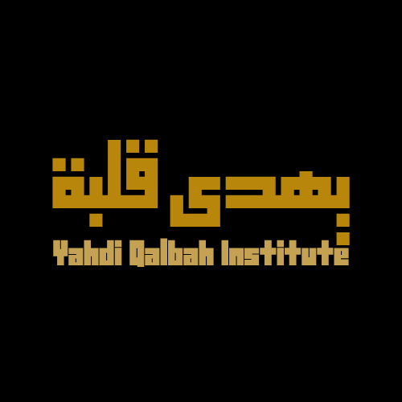

Institut · Sénégal & diaspora francophone
وَمَن يُؤْمِنۢ بِٱللَّهِ يَهْدِ قَلْبَهُ
« Et quiconque croit en Allah, Il guide son cœur. »
Coran 64 : 11 — le verset qui a donné son nom à l'institut ↗Yahdi Qalbah — « Il guide son cœur ». Une plateforme entièrement gratuite, offerte en sadaqa jariya, où chaque parole est vérifiable à la source.
La plateforme
La plateforme grandit pièce par pièce — chaque espace est achevé, vérifié et sourcé avant d'ouvrir le suivant.
سِلْسِلَةُ الأَنْبِيَاء
De Adam à Muhammad ﷺ : un voyage interactif à travers les 25 prophètes cités dans le Coran. Récits complets, ~140 références cliquables — lisez, puis vérifiez à la source.
Descendre le fil →الأَسْمَاءُ الحُسْنَى
Connaître Celui que l'on adore : les plus beaux Noms, un par un, expliqués à la source — pour que chaque Nom change quelque chose dans le cœur.
Bientôtآيَةً آيَة
Le Coran expliqué verset par verset : récitation, traduction en mots simples, mots-clés d'arabe, message pour le cœur. Premier épisode : Al-Fâtiha.
Bientôtدُرُوسُ العَرَبِيَّة
Apprendre à lire et comprendre le Coran en arabe, pas à pas, avec un accompagnement personnel. Séance découverte gratuite — le prix ne doit jamais être un obstacle.
Écrire sur WhatsApp →L'esprit
۞
Chaque affirmation renvoie à ses versets et à ses sources. Rien n'est opinion : « c'est le Livre d'Allah ».
۞
Tout est offert en sadaqa jariya. Le savoir sur le Coran ne se vend pas ici — il se transmet.
۞
Yahdi Qalbah transmet ce que les savants ont établi, et chemine avec vous — pas au-dessus de vous.